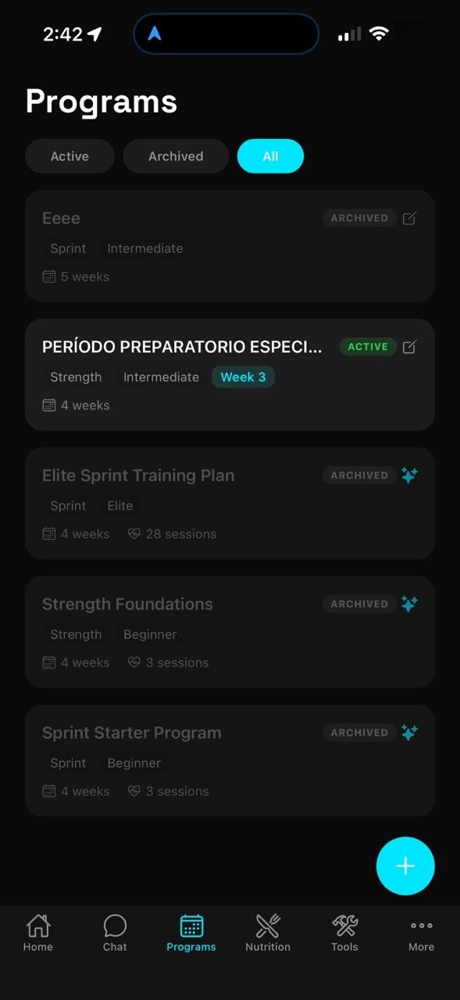
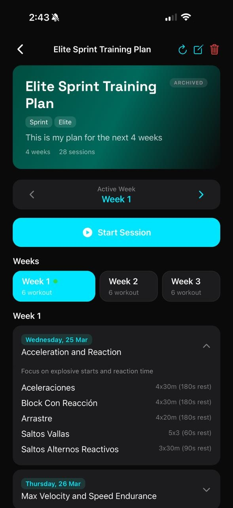
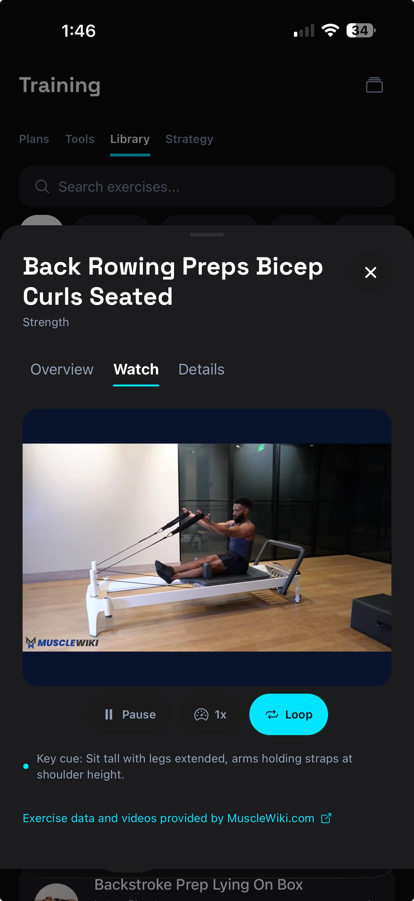
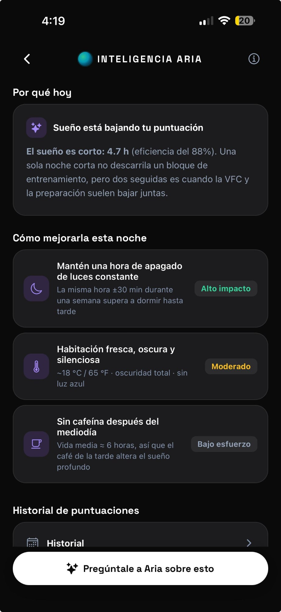
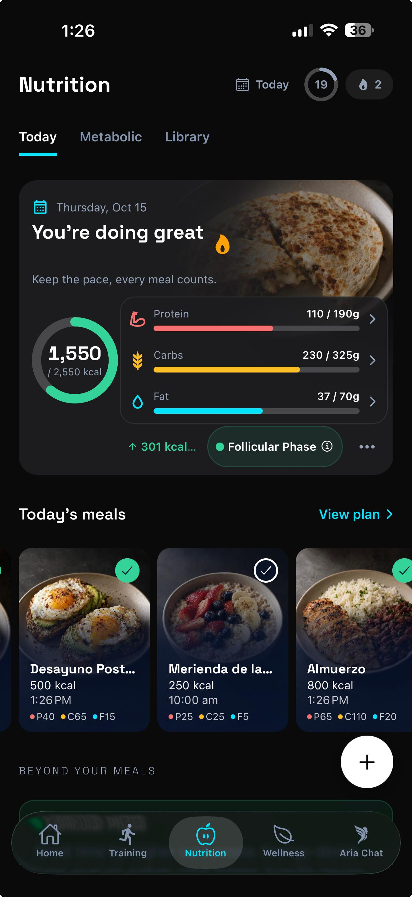
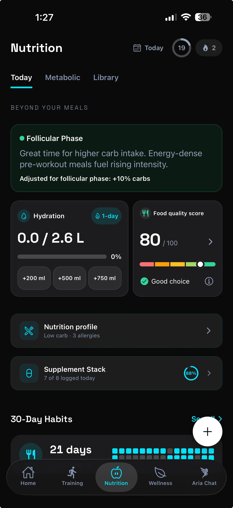
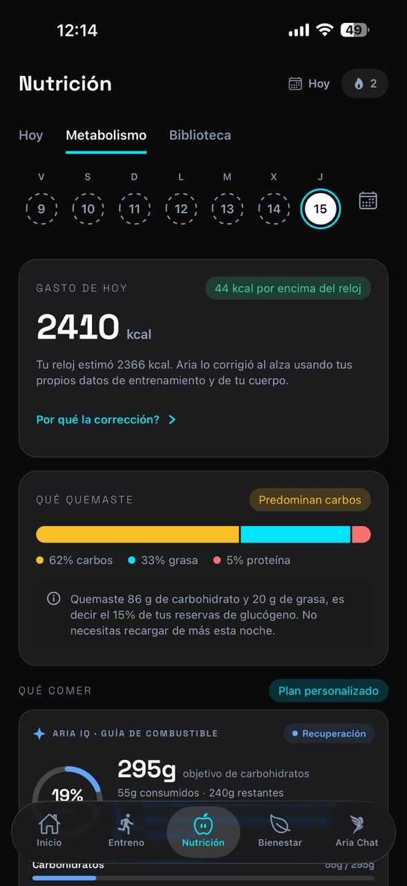
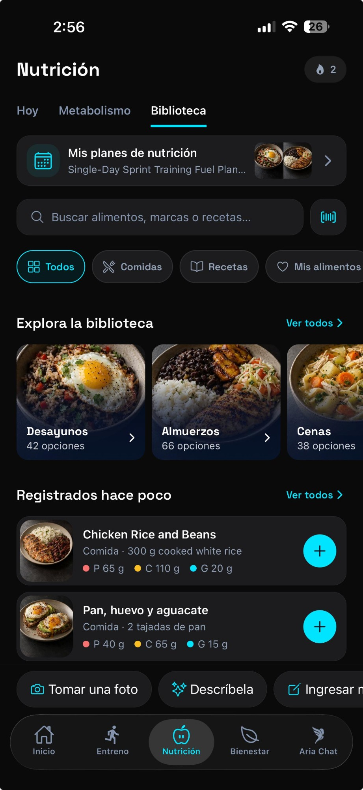

Una app. Cada dimensión del rendimiento en velocidad.
Entrenamiento, nutrición, recuperación, rehabilitación, analíticas y coaching — unificados e inteligentes. Para velocistas y corredores. Sin hardware adicional.
Pregúntale a Aria lo que sea. Obtén respuestas que te conocen.
No es un chatbot genérico. Aria referencia tus datos de recuperación, sesiones recientes, composición corporal y cronograma de competencias para darte orientación específica y contextual.
- Usa tus biométricos en tiempo real y datos de entrenamiento
- 4 estilos de coaching: Motivacional, Técnico, Equilibrado, Mínimo
- Entrada por voz y soporte de archivos adjuntos

Cada herramienta para convertirte en un corredor más rápido y más fuerte.
Programas periodizados, biblioteca de ejercicios, condiciones GPS para cada sesión y un puntaje de preparación diario — todo en un solo lugar.
Bloques periodizados. Creados por ti, Aria IA — o tu entrenador.
Crea programas de tres formas: construye día a día, deja que Aria IA genere un bloque completo, o pega tu plan existente. Importa desde CSV o comienza con plantillas. Y si entrenas con un entrenador, él puede crear y asignarte programas directamente desde Aria for Coaches — para que tu plan viva en un solo lugar, siempre.
- Programas generados por IA adaptados a tu nivel y objetivos
- Sesiones temáticas: Aceleración, Velocidad Máxima, Fuerza, Recuperación
- Niveles de dificultad de Principiante a Élite
- Programas asignados por tu entrenador: él los crea en Aria for Coaches, tú los ejecutas en Aria


Cada ejercicio. Cada cue. Cada rep — en video.
Aria incluye una biblioteca de ejercicios completa y con búsqueda, con videos instructivos para cada movimiento. Entrenamiento de fuerza, drills específicos de sprint, ejercicios de rehabilitación — todo con cues clave de técnica y video en bucle para que nunca tengas que adivinar cómo se ejecuta un movimiento.
- Cientos de ejercicios con video instructivo en bucle
- Filtra por categoría: Fuerza, Drills de Sprint, Rehabilitación y más
- Cues de técnica clave para cada ejercicio
- Vinculado directamente a tus programas de entrenamiento y planes de rehab
- Biblioteca de videos con la base de datos de MuscleWiki

Conoce tus condiciones antes de salir a la pista.
Aria usa tu ubicación GPS para entregar condiciones de entrenamiento en tiempo real — no solo el clima, sino inteligencia específica para el sprint. Dirección del viento relativa a tu carril, la mejor hora para entrenar hoy, carga térmica y riesgo UV — para que cada decisión de sesión esté informada antes de salir.
- Sprint Score 0–100: un número que califica las condiciones de hoy para trabajo de velocidad máxima
- Inteligencia de viento: viento a favor, en contra y cruzado relativo a tu dirección de sprint
- Mejor ventana de entrenamiento: hora óptima para entrenar según las condiciones y tu agenda
- Riesgo de Carga Térmica: Bajo / Moderado / Alto / Extremo con humedad y sensación térmica
- Índice UV y horas de sol pico para programar tus sesiones al aire libre
- Alerta en Apple Watch: actualizaciones de condiciones en tiempo real en tu muñeca
No solo un puntaje. Aria te dice por qué — y qué hacer al respecto.
Cada mañana, Inteligencia Aria desglosa tu preparación en un puntaje sobre 100 con un desglose completo de factores — VFC, sueño, sueño profundo, FC en reposo y más. Luego va un paso más allá: te dice exactamente qué está bajando tu puntaje hoy, y te da acciones rankeadas para mejorarlo esta noche.
- Puntaje 0–100 con barras de factores: ve la contribución exacta de cada señal al puntaje de hoy
- "Por qué hoy" — Aria explica en lenguaje claro qué señal específica te está afectando
- "Cómo mejorarlo" — acciones rankeadas con niveles de impacto: Alto impacto · Moderado · Bajo esfuerzo
- Promedio y tendencia de 7 días: monitorea si tu recuperación está mejorando o deteriorándose semana a semana
- Funciona con Apple Health, Oura y tu dispositivo — datos que ya tienes
- "Pregúntale a Aria sobre esto" — profundiza en cualquier señal o recomendación con una conversación

Nutrición creada para la forma en que entrenas, corres y rindes.
Planes de comidas específicos para sprint, corrección calórica con IA y una biblioteca de alimentos que registra cualquier cosa en segundos — porque la nutrición también es entrenamiento.
Come para tu entrenamiento. No en su contra.
Aria crea planes de comidas específicos para velocistas con combustible pre-sesión, carbohidratos intra-entrenamiento y recuperación post-sesión — y reajusta todo tu día restante con un toque cuando tu entrenamiento cambia. El único sistema de nutrición que sabe qué tan fuerte entrenaste esta mañana.
- Planes generados por IA: En Temporada, Día de Competencia, Fuera de Temporada y bloques personalizados
- "Ajustar mi día" — la IA reequilibra tus comidas restantes después de cualquier cambio de sesión
- Tarjeta de hidratación con objetivos diarios de agua según tu tasa de sudoración
- Retroalimentación con IA en cada comida que registres
- Alimentos según tu región (Latinoamérica, África Oriental, Mediterráneo) y soporte para restricciones dietéticas


Tu reloj adivina. Aria lo corrige.
Los relojes inteligentes pueden sobrestimar o subestimar tu quema calórica hasta en un 30%. El motor de Inteligencia Metabólica de Aria toma la lectura de tu dispositivo y la corrige usando tu historial de entrenamiento, composición corporal y patrones de energía reales — para que tus objetivos nutricionales coincidan con tu cuerpo.
- Corrección calórica con IA: ve la estimación de tu reloj vs. la quema corregida por Aria — y exactamente por qué difiere
- Desglose de sustratos: cuánto carbohidrato vs. grasa quemaste — más tu estado de agotamiento de glucógeno
- Puntuación de Eficiencia Metabólica (0–100): rastrea la flexibilidad de combustible y el metabolismo de recuperación a lo largo del tiempo
- Alertas proactivas: riesgo de sobreentrenamiento, advertencias de agotamiento de glucógeno, cambios en eficiencia aeróbica
- Niveles de calibración: la precisión mejora con el entrenamiento — se actualiza con datos de laboratorio como VO2max, DEXA o TMB

Cada comida. Cada macro. Sin adivinar.
La biblioteca de alimentos de Aria hace que registrar lo que comes sea tan rápido como comerlo. Busca miles de alimentos, escanea un código de barras o toma una foto — y cada comida se registra al instante con macros completos y retroalimentación de IA. Tus planes de nutrición también viven aquí, siempre a un toque.
- Más de 150,000 alimentos con datos completos de macros y micronutrientes
- Escáner de código de barras: escanea cualquier alimento empaquetado para registro instantáneo
- Foto de comida: la IA identifica y registra tu comida desde una imagen
- Navega por categoría: Desayunos, Almuerzos, Cenas y más
- Guarda comidas personalizadas, recetas y tus propios alimentos en tu biblioteca
- Acceso rápido a tus planes de nutrición generados por Aria
